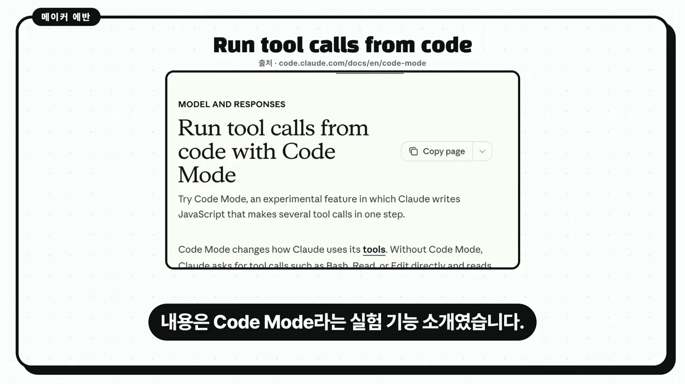
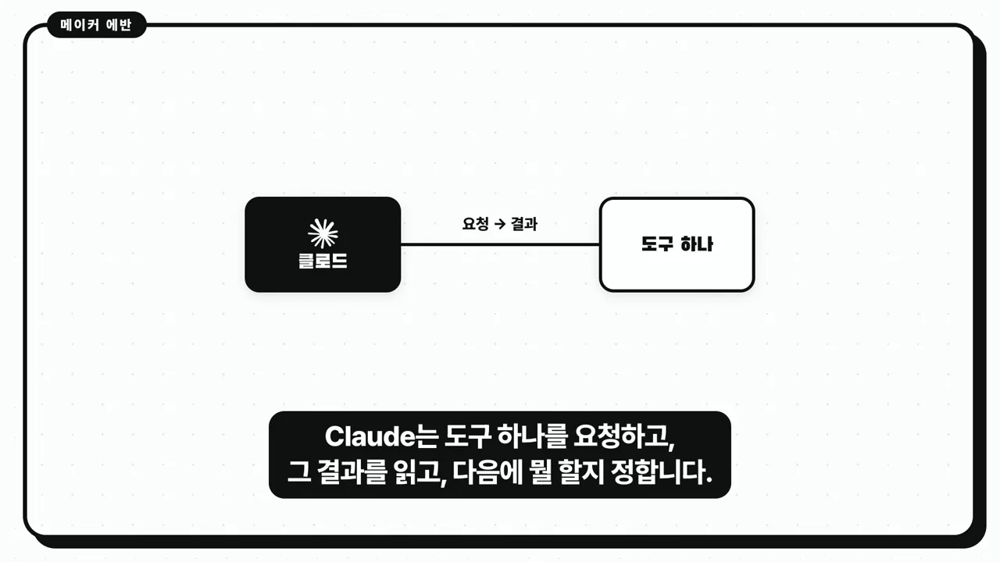
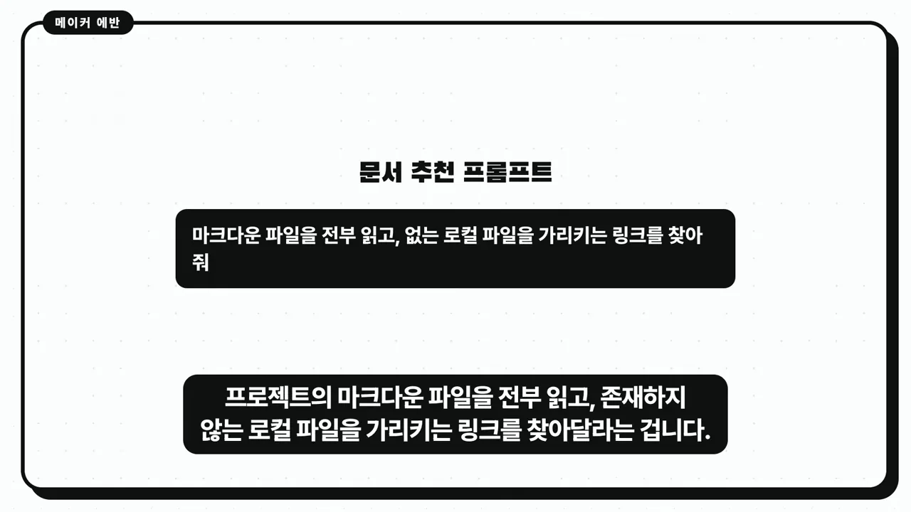
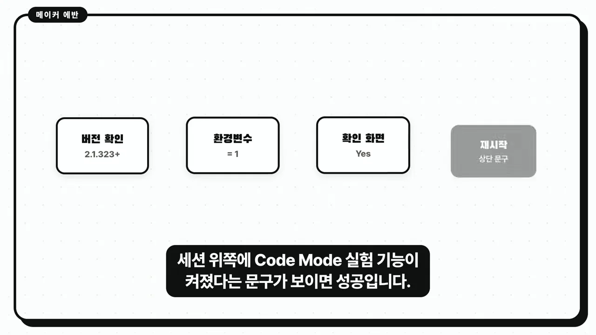
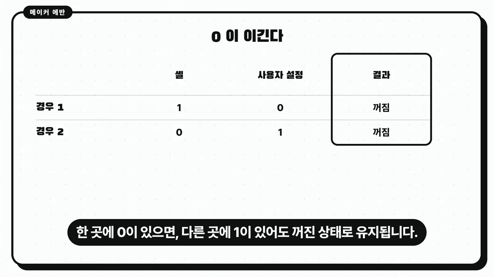
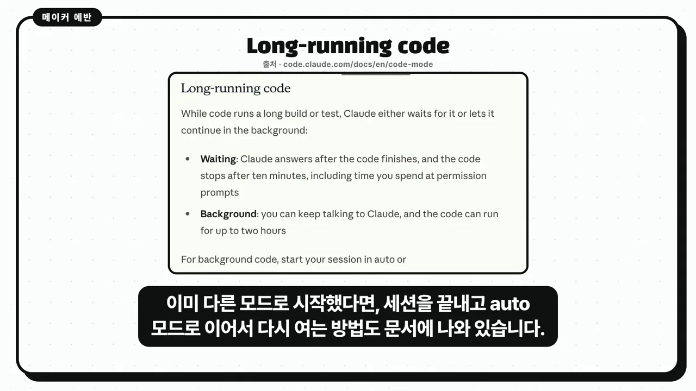
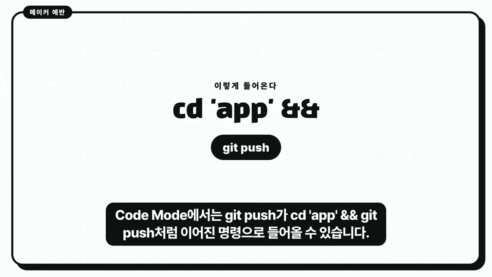
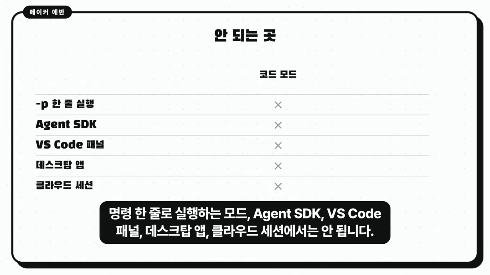
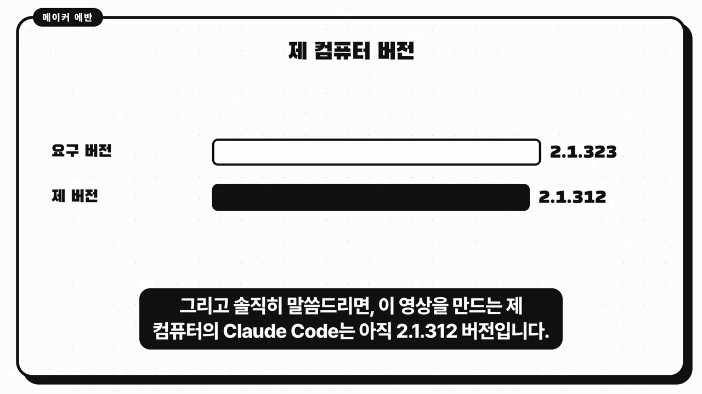
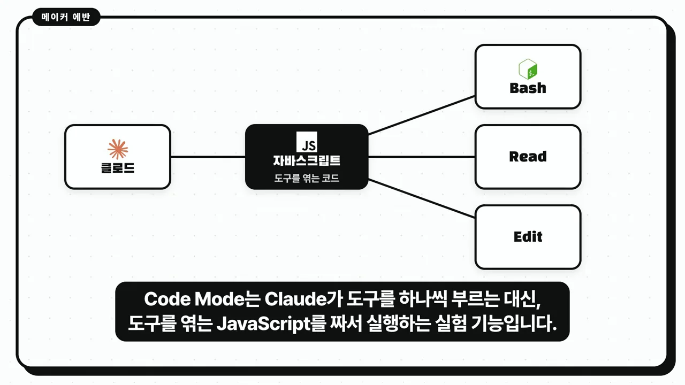

도구를 하나씩 부르면 생기는 일
Claude Code 공식 개발자 계정이 Code Mode라는 실험 기능을 짧은 글로 소개했어요. 발표자에 따르면 조회수가 210만을 넘었어요. 글의 요지는 두 가지예요. Claude가 도구를 하나씩 부르는 대신 도구를 엮는 스크립트를 직접 짜고, 긴 명령이 도는 동안에도 대화를 이어 갈 수 있다는 거예요.
켜는 건 환경변수 하나라 작은 옵션처럼 보여요. 그런데 발표자는 공식 문서를 끝까지 읽어 보면 Claude가 일하는 방식의 바닥이 바뀌는 이야기라고 봐요. 영상은 그 문서를 처음부터 끝까지 함께 읽는 구성이에요. 아래가 영상이 띄운 문서 첫 화면이에요. 제목은 'Run tool calls from code with Code Mode'이고, 바로 아래에 Claude가 여러 도구 호출을 한 번에 하는 JavaScript를 쓴다는 설명이 있어요.

지금까지는 도구마다 한 번씩 다시 생각했어요
Claude Code에는 Bash, Read, Edit 같은 도구가 있어요. 지금 방식에서 Claude는 도구 하나를 요청하고, 결과를 읽고, 다음 할 일을 정해요. 화면의 왼쪽 검은 칸이 Claude, 오른쪽이 도구 하나이고, 둘 사이를 '요청 → 결과'가 오가요.

작업이 단순하면 문제가 안 돼요. 하지만 비슷한 수정이 파일 50개에 걸쳐 있으면 도구 호출도, 모델의 판단도 수십 번이 돼요. 검색 결과가 수백 줄이면 필요한 건 몇 줄인데도 그 수백 줄이 전부 컨텍스트에 들어와요. 이 왕복이 쌓이면 작업 시간은 길어지고 컨텍스트는 빨리 차요. 에이전트를 오래 써 봤다면 도구 호출이 끝없이 이어지는 화면을 본 적이 있을 거라고 발표자는 말해요.
코드 모드는 도구를 엮는 코드를 짜요
Code Mode에서는 Claude가 도구를 직접 부르지 않아요. 도구를 부르는 JavaScript를 쓰고, Claude Code가 그 코드를 사용자 세션 안에서 실행해요. 문서는 코드 한 조각이 할 수 있는 일을 세 가지로 정리해요.
- 여러 명령을 동시에 실행해요.
- 앞의 결과를 다음 호출에 바로 넘겨요.
- 출력 중에서 Claude가 읽어야 할 부분만 골라 돌려줘요.
재시도 횟수 늘리기 예시
문서의 예시는 '재시도 횟수를 늘려 줘'라는 요청이에요. 화면의 네 칸이 코드가 하는 일을 순서대로 보여 줘요. 검색(rg -l)으로 재시도 정책 함수가 든 파일을 찾고, 목록에서 첫 파일을 고르고(split), 최대 시도 횟수를 3에서 5로 바꾸고(edit), 관련 테스트를 돌려요(npm test).

예전 방식이면 네 번 왕복했을 일이 코드 한 번으로 끝나요. 아래 그림은 영상이 막대로 비교한 '모델 왕복 횟수'를 같은 네 단계로 다시 그린 거예요. 위쪽은 단계마다 Claude가 판단하고, 아래쪽은 판단 한 번 뒤에 코드가 네 단계를 몰아서 처리해요.
여기서 발표자가 짚는 점이 하나 더 있어요. 테스트가 실패해도 코드가 멈추지 않도록, 실패를 그대로 받아서 돌려주게 짜여 있다는 거예요. Claude는 그 결과를 읽고 다음 할 일을 다시 정해요.
화면에는 평소처럼 보여요
대화창에는 코드가 아니라 도구 호출이 보여요. 파일을 고쳤다면 수정 내역(diff)이 평소처럼 나와요. 코드를 직접 보려면 Ctrl+O를 눌러 트랜스크립트 뷰어를 열어요. 코드 한 조각이 접힌 Code 행으로 나오고, 펼치면 Claude가 짠 JavaScript를 읽을 수 있어요. Ctrl+O를 한 번 더 누르면 대화로 돌아와요. 결과는 평소처럼 보여 주고 과정은 원할 때만 여는 구조라, 처음 켜면 평소와 똑같아 보일 수 있어요. 차이는 도구 호출이 묶음으로 처리되는 속도에서 느껴진다고 해요.
어떤 작업에 잘 맞나요
| 문서가 꼽은 작업 | 영상이 든 예 |
|---|---|
| 같은 수정이 여러 파일에 반복되는 작업 | 함수 이름 바꾸기, 설정값 하나를 프로젝트 전체에서 고치기 |
| 검색 결과를 걸러야 하는 작업 | 결과를 전부 읽지 않고, 코드 안에서 먼저 거른 뒤 남은 것만 읽기 |
| 서로 상관없는 명령 여러 개를 동시에 돌리는 작업 | 린트, 타입 검사, 테스트를 따로 기다리지 않고 한 번에 |
문서가 직접 권하는 시험용 프롬프트도 있어요. 화면 가운데 검은 칸의 문장이에요. 파일을 많이 읽고, 결과를 거르고, 마지막에 목록만 남기는 작업이라 차이가 잘 보여요.

켜는 방법과 긴 명령 돌리기
켜는 순서는 네 단계예요. 화면의 네 칸이 그 순서이고, 마지막 회색 칸이 재시작 후 세션 위쪽에 뜨는 문구예요.

- 버전을 확인해요 — Claude Code 2.1.323 이상이어야 해요. 낮으면
claude update로 먼저 올려요. - 환경변수를 1로 두고 시작해요 — 매번 켜려면 사용자 설정 파일
~/.claude/settings.json의env항목에 같은 값을 넣어요.CLAUDE_CODE_EXPERIMENTAL_CODE_MODE=1 claude - 확인 화면에서 켜겠다고 골라요 — Claude Code가 재시작해요. 세션 위쪽에 Code Mode 실험 기능이 켜졌다는 문구가 보여요
눈여겨볼 점이 하나 있어요. 프로젝트 설정 파일에 이 값을 넣으면 Claude Code가 무시해요. 남이 만든 저장소를 받았을 때 그 저장소가 Code Mode를 몰래 켜지 못하게 막은 거예요.
끄기는 0이 이겨요
끄려면 값을 지우거나 0으로 바꾸면 돼요. 화면의 표가 규칙을 보여 줘요. 경우 1은 셸에 1, 사용자 설정에 0이고, 경우 2는 셸에 0, 사용자 설정에 1이에요. 두 경우 모두 결과 칸은 '꺼짐'이에요.

회사 관리자라면 관리 설정에 0을 넣어 조직 전체에서 막을 수 있어요. 반대로 관리 설정으로 강제로 켜는 건 안 돼요.
긴 명령이 도는 동안 대화하기
공식 글이 내세운 두 번째 기능이에요. 코드가 오래 돌 때 Claude가 일하는 방식은 두 가지예요.
| 방식 | 코드가 도는 동안 | 최대 실행 시간 |
|---|---|---|
| 기다리기 (기본) | 코드가 끝나야 Claude가 답해요 | 10분. 권한 확인 창에서 고민하는 시간도 들어가요 |
| 백그라운드 | Claude와 계속 대화할 수 있어요 | 최대 2시간 |
백그라운드라면 긴 빌드나 전체 테스트를 걸어 두고 그 사이에 다른 질문을 할 수 있어요. 조건은 세션을 auto 모드나 bypassPermissions 모드로 시작하는 거예요. 영상이 띄운 문서 화면에도 두 방식과 이 조건이 그대로 적혀 있어요. 'Waiting' 항목에 10분, 'Background' 항목에 2시간이 보여요.

- 중간에 다른 모드로 바꿨다면,
Shift+Tab으로 시작했던 모드로 돌아가야 백그라운드가 돼요. - 도구 목록을 직접 지정하는 옵션(
--tools)으로 시작했다면, 그 옵션을 빼고 다시 시작해요. - 이미 다른 모드로 시작했다면, 세션을 끝내고 auto 모드로 이어서 다시 열어요.
발표자의 정리는 이래요. 길게 도는 작업일수록 처음 시작하는 모드를 미리 정해 두는 게 좋아요.
권한 검사와 쓸 수 있는 곳
코드가 도구를 대신 부르면 권한 검사는 어떻게 될까요. 코드 안의 도구 호출도 하나하나 거부 규칙(deny)과 확인 규칙(ask)을 거쳐요. PreToolUse 훅도 Bash 같은 원래 도구 이름으로 똑같이 받아요.
달라지는 곳은 auto 모드예요. auto 모드의 분류기는 도구 호출 하나하나가 아니라, 실행 전에 코드 한 조각을 통째로 봐요. 문제는 실행 중에 계산되는 값을 못 본다는 점이에요. 검색 결과에서 꺼낸 경로는 실행 전에는 알 수 없죠. 그래서 문서는 반드시 막아야 하는 호출은 규칙이나 훅으로 따로 지키라고 적어 뒀어요.
훅을 쓴다면 확인할 것
Code Mode에서는 git push가 그대로 오지 않을 수 있어요. 화면처럼 app 폴더로 이동하는 명령과 이어져 cd 'app' && git push 한 줄로 들어와요.

코드 자체를 검사하고 싶다면 코드를 실행하는 REPL(Read-Eval-Print Loop) 도구에 훅을 걸면 돼요. 훅이 받는 입력의 코드 항목(tool_input.code)에서 Claude가 짠 JavaScript를 그대로 읽을 수 있어요.
문서는 이게 Code Mode만의 문제가 아니라고도 경고해요. Bash 규칙은 명령 문자열을 비교하니, 규칙과 다른 형태로 같은 명령을 실행할 수 있어요. 문자열에 기대지 않는 제한이 필요하면 샌드박스를 쓰라고 권해요.
아무 데서나 되는 건 아니에요
요구 조건은 꽤 까다로워요.
- 모델 — Opus 5.5, Sonnet 5.5, Haiku 5.5, Fable 5.2만 돼요.
- 계정 — Claude 구독이나 콘솔 계정이 있어야 해요. 게이트웨이나 Bedrock 같은 클라우드 경유로는 안 돼요.
- 설치 — 네이티브 빌드로 설치한 Claude Code여야 해요.
- 재개 — Code Mode로 시작한 세션은 Code Mode를 켠 상태로, 터미널에서만 다시 열 수 있어요.
- 설정 — API(Application Programming Interface) 키 헬퍼, OpenTelemetry 내보내기, 텔레메트리 끄기가 켜져 있으면 시작이 안 돼요.
실행 환경은 터미널에서 직접 여는 대화형 세션뿐이에요. 화면의 '안 되는 곳' 표에 다섯 곳이 모두 X로 표시돼 있어요.

켜지지 않으면 세션 위쪽에 이유가 한 줄로 나와요. 그 문구를 문서의 표와 맞춰 보면 돼요.
아직 실험 기능, 그래도 의미 있는 이유
여기까지 들으면 당장 켜고 싶을 수 있지만, 발표자는 짚을 점 다섯 가지를 꼽아요.
- 실험 기능이에요. 기본값은 꺼짐이고, 어떤 릴리스에서든 바뀌거나 사라질 수 있다고 문서에 적혀 있어요.
- 과정이 덜 보여요. 대화창에 코드가 안 보이니, 무슨 순서로 뭘 했는지 보려면 매번 트랜스크립트를 열어야 해요.
- auto 모드의 검사가 느슨해질 수 있어요. 코드 한 조각 단위로 보기 때문에, 실행 중에 정해지는 경로는 분류기가 못 봐요.
- 동시에 돌던 코드가 검사를 잃을 수 있어요. 앞의 코드가 아직 도는데 새 코드가 시작되면, 남은 호출을 사용자에게 다시 물어요. 그 창에는 약 2분 카운트다운이 붙고, 시간 안에 답하지 않으면 그 호출은 거부돼요.
- 훅이 실패하거나 시간을 넘기면 코드에서 나온 그 도구 호출은 거부돼요.
발표자는 솔직하게 덧붙여요. 영상을 만든 컴퓨터의 Claude Code는 아직 2.1.312 버전이에요. 화면의 막대처럼 요구 버전 2.1.323보다 낮아서, 직접 켜 보지는 못했어요. 그래서 영상 내용은 전부 공식 문서 기준이에요.

그래도 의미가 있는 이유
지금까지 에이전트의 속도를 잡아먹던 건, 도구를 부를 때마다 모델이 다시 생각하는 왕복이었어요. Code Mode는 그 왕복을 코드 한 조각으로 묶어요. 모델은 판단할 일을 판단하고, 반복하고 거르는 일은 코드가 해요. 컨텍스트에는 원본 출력 대신 필요한 부분만 들어와요.
발표자의 해석으로는 같은 작업에서 모델 호출 수와 읽는 토큰이 줄어드는 방향이에요. 다만 얼마나 줄어드는지는 공식 숫자가 없어요. 그래서 직접 재 보라고 권해요. 같은 작업을 Code Mode를 끈 세션과 켠 세션에서 한 번씩 돌리고, 걸린 시간과 사용량을 비교하면 돼요. 긴 작업을 걸어 두고 대화를 이어 가는 것도 실제로 일을 맡기는 방식에 가까워지는 변화라고 봐요.
마지막 정리 화면이 이 기능을 한 장으로 보여 줘요. 왼쪽 클로드가 가운데 JavaScript, 곧 도구를 엮는 코드를 짜고, 그 코드가 오른쪽 Bash, Read, Edit를 부르는 구조예요.

발표자의 마지막 권고는 이래요. 실험 기능이니 중요한 저장소보다 익숙한 프로젝트에서 먼저 써 보라는 거예요.